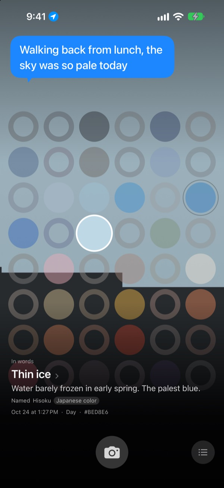
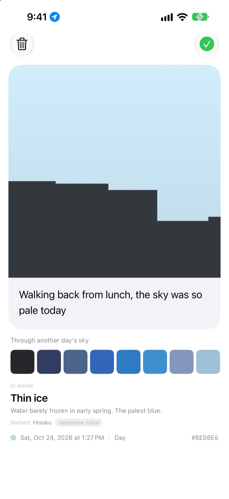
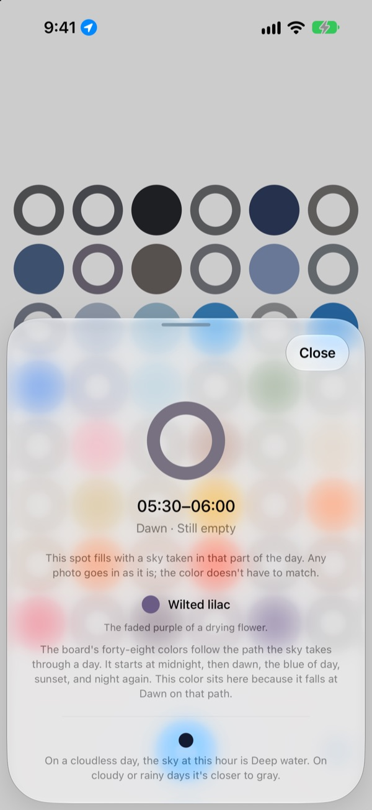
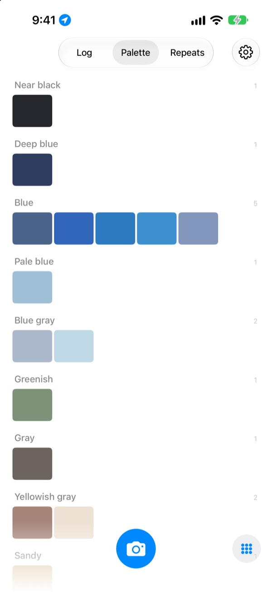

What colour was
the sky today?
Photograph the sky and the cell for that time of day fills with the colour you caught, on a board of forty-eight. It also gets a name you can picture, like thin ice, pool tile or ripe persimmon.
Free. No account, no sign-in.

Try the board
Tap a cell to see which part of the day it is. Add a sky photo to fill the cell for right now, then move the days forward and watch the board change.
You look at the sky every day, but can't remember a single colour
The sky on the way to work, the sky when you stepped out after lunch: by evening the colours are gone. The sky photos you did take get buried among everything else in your camera roll. SkyDex collects them as colours and lays out the path today's sky took on a single board.
Every sky gets a name
Each colour first gets a name you can see in your head, like thin ice, pool tile or ripe persimmon. Beneath it comes a name with a source: a Korean or Japanese traditional colour, a pigment or a standard colour.
When the match is close it says Named; when it isn't, it says Nearest name.

Leave a line
A card opens as soon as you shoot. Write down what you were thinking as you looked up, and it floats back over the sky whenever you tap that cell on the board.
You can also lay the colour of another day's sky over this photo and share the result as a picture.

Empty cells show the way
Tap an empty cell to see which part of the day it is and what colour to look for. It also tells you what the sky at that hour looks like on a cloudless day, timed to sunrise and sunset where you are.
The colour doesn't have to match. The grey of an overcast day is that day's sky colour too.

Log, palette, repeats
Browse your skies in order, and gather your colours into palettes such as blues, greys and sandy tones. Shoot the same hour on another day and the two stand side by side.
Home Screen widgets show today's board and today's sky at a glance.

Three steps to start
- 1
Look up
Tap the camera button under the board and let the sky fill the square.
- 2
A cell fills in
The cell for right now takes the colour you caught, and a name.
- 3
Leave a line
Write what you were thinking on the card that opens.
How the board divides the day
- Midnight · 00:00–05:00
- six cells
- Dawn · 05:00–08:00
- six cells
- Day · 08:00–16:00
- twelve cells
- Late afternoon · 16:00–18:00
- six cells
- Sunset · 18:00–21:00
- twelve cells, one every 15 minutes
- Night · 21:00–24:00
- six cells
Cells are packed tight around sunset, when the sky changes fast, and spread out in the middle of the night, when it barely moves. The top of the board is midnight, and the day runs downwards.
Questions
How does a cell fill?
A sky you shoot today fills the cell for the time you shot it, even if the colour isn't what you expected. That really was the sky at that hour. Skies from earlier days go in by colour: if one is close enough to a cell's colour it fills that cell, and each sky fills only one cell.
A cell that was full yesterday is empty today.
The board is today. A cell that yesterday's sky filled by its time is matched again by colour alone once the day turns. So some days the board is nearly full and some days it looks empty. Your photos haven't gone anywhere: every sky is in the Log, and in colour order in the Palette.
My filled cells are fading.
That's on purpose. A photo keeps its true colour for a week, then slowly fades over the next eight weeks. It isn't deleted, and it never fades away completely. Shoot the sky at that time again and the cell snaps straight back to full colour. There's no streak to break and no score to win back.
Does the colour have to match?
No. There's no pass or fail. Every photo is saved, and the grey of an overcast day is that day's sky colour too.
Why does it ask for my location?
Only to tell you, when you tap an empty cell, what a cloudless sky looks like at that hour, timed to sunrise and sunset where you are. It uses an approximate location to the nearest kilometre, and coordinates are never attached to your photos. If you say no, everything still works, using Seoul as the reference.
Can I add a sky from my photo library?
Yes. A sky you pick from Photos instead of the camera is cropped to a square as well, and fills the cell for right now, just like one you shoot.
How do I delete a photo?
Open the photo and tap Delete, or swipe left on it in the Log. It's removed from your device and your iCloud together. Deleting the app leaves the copy in iCloud, so your skies come back if you reinstall.
What happens when I switch phones?
Your skies are stored in your own iCloud, so they carry over to a new device signed in to the same Apple Account. There's no account and no server, and your photos and colours are never sent to the developer. No ads, no tracking.
Is it really free?
Yes, every feature is free. If you like it you can leave the developer a tip in the app, but tips don't unlock anything.
Which devices does it run on?
iPhone with iOS 17.0 or later, in portrait only.
Bugs, odd behaviour, or anything you'd like to say: write to leeo@kakao.com. Telling us what you were doing and your iOS version makes things much easier to track down.